비서-2급 (2020-05-10 기출문제)
1과목: 비서실무
1. 비서의 직장 내 화법으로 가장 적절한 것은?
- 기념식에서 “사장님 축사가 있으시겠습니다.”라고 말할 수 있다.
- 내방객 안내 시 “부장님은 부사장님실에 계십니다.”라고 말할 수 있다.
- 문서에서는 “김재석 차장 제안으로 다음과 같이 회의가 열릴 예정입니다.”라고 쓸 수 있다.
- 보고 시 “과장님, 김대리님께서 전달하시라고 했습니다.”라고 말할 수 있다.
(정답률: 64%)

2. 다음 중 경비처리방법으로 가장 적절하지 않은 것은?
- 비서는 경비 처리 규정을 넘는 품목은 결재권자에게 사후보고를 하고 구매 주문을 실행한다.
- 비서실에서 발생한 경비 중 세무상 비용으로 인정받기 위해서는 법정 지출 증빙을 갖추어야 한다.
- 상사가 지출한 접대비 중 증빙을 갖추지 못하면 비용을 인정받을 수 없다.
- 경비처리에 필요한 영수증은 증거 서류이므로 훼손되거나 분실하지 않도록 주의한다.
(정답률: 65%)
3. 우리 회사에 기술을 이전하기 위하여 미국에서 엔지니어가 6개월간 파견되었다. 엔지니어를 위하여 숙소를 레지던스 호텔로 예약하려고 하는데 이 때 비서의 업무 태도로 가장 부적절한 것은?
- 회사의 경비 규정을 확인하고 엔지니어가 선호하는 숙박업소가 있는지 문의한다.
- 우리 회사에서 자주 이용하는 레지던스 호텔에 장기투숙 할인율을 문의한다.
- 레지던스 호텔에 세탁서비스가 무료로 가능한지 문의하고 유료라면 추가로 세탁 할인 쿠폰을 받을 수 있는지 문의한다.
- 레지던스 호텔은 요리를 할 수 있는 공간이 있으므로 간단한 조리도구와 식재료를 준비해 준다.
(정답률: 72%)
4. 비서에게 필요한 역량에 관해 비서 A, B, C, D가 주장을 펼치고 있다. 어느 비서의 주장이 가장 적절하지 않은가?
- A: “앞으로 인공지능비서도 출현 예정이라고 하므로 인간의 고유한 감각과 관련된 역량을 강화시켜야겠습니다.”
- B: “비서는 멀티플레이어가 되어야 합니다. 비서가 모시고 있는 상사가 조직의 멀티플레이어로서 조직의 모든 분야를 책임져야 하는 경영자이기 때문입니다.”
- C: “비서에게는 다문화 이해능력이 필요합니다. 다문화란 국제적인 것 뿐 아니라 여러 세대가 조직원으로 근무하고 있는 기업의 구성원들을 이해하기 위해서도 필요합니다.”
- D: “인공지능 비서가 확대됨에 따라 상사의 IT 활용 기술이 엄청 빠르게 확산되므로 휴먼 비서의 역할은 응대 업무에 집중되어 관련 서비스 교육이 필요합니다.”
(정답률: 63%)
5. 다음 중 비서로서 구성원들을 대하는 행동으로 가장 바람직한 것은?
- 사내 직원들과의 모임에서 들었던 직원들의 업무상 고충이나 애로사항 등을 상사에게 전달한다.
- 상사와의 원만한 관계를 위해 비서의 업무스타일을 상사에게 알려 상사와 비서간의 파트너쉽 역할을 잘 할 수 있게 한다.
- 입사 초기에 선임비서의 업무 처리 방식이 내가 학교에서 배운 내용과 달라 업무 개선을 위한 솔직한 대화를 시도한다.
- 비서실 입사 후배지만 나이가 나보다 많은 경우 공식적인 자리에서는 연령 우선의 예우를 한다.
(정답률: 61%)
6. 비서팀장인 김원희씨는 신입비서를 위한 업무매뉴얼을 작성하여 경력지도의 자료로 삼고자 한다. 업무매뉴얼에 대한 설명으로 가장 부적절한 것은?
- 모범 사례를 기록하고 업무수행에 필요한 Tip이나 자주 하는 질문(FAQ) 등을 포함시킨다.
- 모범 사례가 충분치 않아 타 조직을 벤치마킹하거나 참고 문헌의 사례를 참조하여 매뉴얼을 완성한다.
- 서식, 템플릿 작성 방법에 대한 안내도 포함시켜 OJT 기간에도 업무가 가능하도록 만든다.
- 매뉴얼이 완성되면 사내에 배포하여 구성원들의 피드백을 받은 후 회사 홍보 블로그에 업로드하여 누구나 열람할 수 있도록 한다.
(정답률: 65%)
7. 한 달 후 미국 뉴욕으로 출장 가는 상사의 출장 준비 업무 처리로 가장 적절한 것은?
- 상사의 여권의 유효기간이 4개월 남아있어 뉴욕 출장에서 돌아오면 여권갱신을 신청하려고 업무일지에 메모해 두었다.
- 상사의 출장 일정표에는 호텔명과 예약확인번호만 기입해 두었다.
- 뉴욕 현지 출장일 날씨정보와 식당, 관광 정보 등을 수집하여 상사에게 보고하였다.
- 호텔 예약 시 상사의 체크인, 체크아웃 예상시간은 상사의 개인 정보이므로 호텔에 알려 주지 않았다.
(정답률: 68%)
8. 비서가 상사의 일정을 관리하는 방법으로 가장 적절하지 않은 것은?
- 임원 회의 일정을 정할 때 신속하고 정확하게 일을 처리하기 위해서는 회의 참석 당사자와 직접 통화하는 것이 가장 바람직하다.
- 일정 변경이 불가피할 경우 관련자뿐만 아니라 연계된 장소나, 교통편 등에 대한 취소나 변경이 함께 이루어지도록 연락을 취한다.
- 상사가 일정관리를 전적으로 위임하지 않았다면 상사의 일정은 반드시 상사의 허락을 받고 확정한다.
- 상사의 회의 일정을 정할 때 회의 일정 사이에 여유시간을 둔다.
(정답률: 71%)
9. 행사 당일에 최종 점검해야 하는 사항으로 올바르지 않은 것은?
- 행사장 집기 및 장비: 국기게양, 의자배열, 음향시설 등
- 행사준비물: 기념사 등 연설문, 행사진행 시나리오, 안내 입간판 등
- 행사진행요원: 영접 및 환송 시 위치, 역할별 담당자 등
- 초청인사: 주요인사 참석명단, 초청장 문안, 초청인사 프로필 등
(정답률: 63%)
10. 비서가 내방객을 응대하는 태도로 가장 적절하지 않은 것은?
- 각기 다른 약속의 내방객이 동시에 방문하는 경우 모두 한 대기실로 안내하여 서로 지루함 없이 기다릴 수 있도록 배려하였다.
- 미리 약속되지 않은 내방객의 경우 물건 판매를 위한 단순판매자 일지라도 회사의 이미지 제고를 위하여 정중하고 친절한 태도로 응대하였다.
- 상사 부재중 방문한 내방객을 응대할 때, 상사로부터 지시받지 못한 부분에 대한 질문을 받을 때는 추측으로 답하지 않고 추후 연락을 드리겠다고 하였다.
- 내방객에게 자리를 권할 때는 출입구에서 먼 쪽으로 안내하였고, 상사의 자리가 정해져 있는 경우 상사의 오른편으로 안내하였다.
(정답률: 66%)
11. 선약 없이 방문한 내방객의 응대로 가장 적절하지 않은 것은?
- “죄송합니다. 지금 회의 중이시라 명함을 남기시면 연락을 드리겠습니다.”
- “죄송합니다. 사장님께서 지금 외출 중이신데 오후에나 돌아오실 예정입니다. 급한 용건이신지요?”
- “죄송합니다. 사장님은 지금 가나호텔에서 회의가 있어 오늘은 만나기 어려우실 것 같습니다.”
- “죄송합니다. 사장님께서 방금 외출하셨는데, 전하실 말씀있으시면 알려 주십시오.”
(정답률: 69%)
12. 다음은 상황별 전화응대 내용이다. 다음 중 가장 적절한 것은?
- 급한 용무로 자리를 비우게 되었을 때 본인의 회사 전화를 자신의 휴대전화로 착신 전환 후 외출하였다.
- 상사와 중요 고객사와의 회의 중 상사가 기다리고 있던 삼진물산 사장의 전화가 걸려와서 회의실로 들어가 “회장님, 삼진물산 김도철사장님의 전화입니다. 2번 전화 받으시면 됩니다.”라고 말씀 드렸다.
- 상사 부재중에 상사를 찾는 전화가 왔다. 성함을 여쭤봤더니 “울산 김사장”이라고 하여 전화메모에 울산 김사장이라고 기재하였다.
- 상사인 회장과 가깝게 지내는 가나물산 양회장 비서가 양회장이 지금 전화 연결을 원한다고 하여 양회장 비서에게 “먼저 연결해주시겠어요?”라고 요청하였다.
(정답률: 59%)
13. 다음 중 의전 수행 시 고려해야 하는 내용으로 적절하지 않은 것은?
- 드레스코드가 'informal'인 경우 남성은 청바지와 깨끗한 티셔츠로 입장이 가능하다.
- 상사가 외부 공식 행사에 참석하게 되어 비서는 참석자 프로필, 공연 정보, 만찬 진행 순서, 행사 내용, 드레스 코드 등을 사전에 확인하여 상사에게 보고하였다.
- 상사가 공식 저녁 식사에 초대를 받아 참석하게 되어 비서는 상사의 좌석을 사전에 확인하였다.
- 각종 행사에 초청자 중 특별한 역할이 있을 때는 서열과 관계없이 자리 배치를 달리 할 수 있다.
(정답률: 57%)
14. 상사가 외부 회의에 참여를 요청받았을 때 비서의 업무 절차로 가장 적절한 것은?
- 요청받은 회의일시 및 내용 확인 → 상사에게 보고 → 상사 일정표 확인 → 참석여부 통보 → 일정표 기입
- 요청받은 회의일시 및 내용 확인 → 상사 일정표 확인 → 상사에게 보고 → 일정표 기입 → 참석여부 통보
- 상사에게 보고 → 요청받은 회의일시 및 내용 확인 → 상사 일정표 확인 → 참석여부 통보 → 일정표 기입
- 상사에게 보고 → 상사 일정표 확인 → 요청받은 회의일시 및 내용 확인 → 일정표 기입 → 참석여부 통보
(정답률: 68%)
15. 상사의 해외출장 예약 업무를 할 때 가장 적절한 것은?(오류 신고가 접수된 문제입니다. 반드시 정답과 해설을 확인하시기 바랍니다.)
- 상사가 선호하는 항공편에 좌석이 없어 다른 항공권을 우선 예약하고 선호하는 항공편의 대기자 명단에 상사의 이름을 올려 두었다.
- 항공권 구매시 상석인 창가쪽 좌석으로 예약을 했다.
- 성수기로 인해 국제청사가 복잡할 때는 상사가 도심공항 터미널에서 탑승수속을 한 후 공항으로 출발하도록 일정을 조정하였다.
- 출장지에서 머무를 호텔은 상사의 업무수행이 용이한 컴퓨터와 책상, 와이파이가 무료로 제공되는 비즈니스 호텔을 우선으로 예약하였다.
(정답률: 56%)
16. A씨는 입사한 지 1개월 된 신입비서이다. A씨의 상사는 아직은 개인적인 일정뿐 아니라 공식적인 일정까지도 직접 연락해서 결정하고 있어 다른 사람들이 상사의 일정을 물어볼 때 매우 난감하였다. A씨가 상사의 일정관리 업무를 위해 취한 행동 중 가장 적절하지 않은 것은?
- 정기적인 일정은 일정표에 미리 기재해 두고, 매일 아침 정기업무 보고 시 상사에게 일정을 여쭈어보고 기록하였다.
- 상사 집무실을 정돈하면서 상사 책상 위 달력에 적혀 있는 상사의 일정을 참고하였다.
- 업무 관련 문서들을 읽으면서 상사와 관련된 일정을 비서의 일정표에 기록하였다.
- 상사의 일정을 상사 스마트폰과 연동시키기 위해 일정관리의 재량권을 정식 요청했다.
(정답률: 49%)
17. 상사 출장 중에 상사와 친한 동창이라는 분이 전화를 하였다. 상대방은 TV 출연도 자주하는 꽤 유명한 방송인이다. 상사가 출장 중이라고 하니 막무가내로 핸드폰 번호를 알려달라고 한다. 어떻게 대처하는 것이 비서의 자세로 적절한가?
- 전화를 건 상대방이 공신력 있는 방송인이므로 상사의 연락처를 알려드린다.
- 상대방에게 용건을 물어본 후 상사와 연락을 취하여 바로 연락드리겠다고 말씀드린다.
- 상사의 휴대폰 번호는 알려드리지 못하지만 머무르고 있는 호텔 전화번호를 알려드린다.
- 상사의 출장 일정을 말씀드린 후 상사와 통화가 가능한 시간을 알려준다.
(정답률: 73%)
18. 다음 중 비서가 조직 구성원과의 관계를 위해 취하는 행동으로 가장 바람직한 것은?
- 비서는 타부서에 상사의 지시를 전달할 경우 상사의 권위에 맞게 상사의 지시 사항을 하달하였다.
- 경제적으로 어려움에 처해있는 동료의 이야기를 듣고 비서는 상사에게 이 사실을 알리고 도울 방법을 제시한다.
- 비서는 동료직원의 업무 고충을 직접 듣게 되었을 경우 상사가 필요로 할 때 상사에게 말씀드린다.
- 비서는 직장 내에서 힘든 일이 있을 때 혼자 해결하기보다는 가까운 사내 동료들에게 솔직하게 문제를 이야기 하여 도움을 받는다.
(정답률: 48%)
19. 출장 후 오늘 복귀한 상사에게 오늘의 일정을 보고하려고 한다. 비서가 보고하면서 확인을 위하여 질문해야할 사항으로 가장 부적절한 것은?
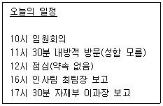
- “출장 기간 동안 걸려온 전화는 언제 연결해 드릴까요?”
- “오늘 점심 약속이 없으신데 혹시 내방객과 점심 계획이 있으신지요?”
- “사장님께서 개인적으로 약속하신 손님이 11시 30분에 방문하십니다. 그 분께 전화 드려 성함을 여쭈어볼까요?”
- “자재부 이과장 보고 시간이 너무 늦으면 내일로 늦출까요?”
(정답률: 60%)
20. 상사의 출장업무를 지원하는 비서의 업무로 가장 적절하지 않은 것은?
- 인천공항이 붐빌 것으로 예상되어 도심공항터미널을 이용하여 탑승수속까지 마치고 인천공항에서는 수하물만 부치도록 조치했다.
- 상사가 미국 출장을 가게 되어 미국 대사관 홈페이지에서 지난 2월로 만료된 사전입국승인을 신청해 두었다.
- 상사의 출장지가 여러 곳이어서 스마트 기기에 출장일정을 연동해 두었다.
- 출장일정표 작성 시 회의, 방문, 모임과 관련된 내용을 상세히 기록한다.
(정답률: 55%)
2과목: 경영일반
21. 오늘 날 기업이 직면하는 외부환경은 급속도로 변하고 있다. 변화하고 있는 외부환경의 특성으로 가장 거리가 먼 것은?
- 환경의 안정성 증가
- 환경의 복잡성 증가
- 환경자원의 풍부성 감소
- 환경변화의 가속화
(정답률: 71%)
22. 기업의 외부환경을 분석할 때 경제적 환경요인에 해당하지 않는 것은?
- 금융 및 재정정책
- 국민소득 수준
- 정부의 정책과 규제
- 인플레이션
(정답률: 57%)
23. 다음은 어느 회사의 성명(방침)의 일부를 기술한 것이다. 보기 중 가장 가까운 경영개념은 무엇인가?
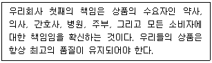
- 기업윤리
- 기업통제
- 기업전략
- 기업경영
(정답률: 71%)
24. 다음 중 소자본 창업과 벤처창업에 대한 설명으로 가장 적절한 것은?
- 소자본창업은 적은 자본으로 기존의 사업성이 분석된 안정된 사업을 선택하여 설립한다.
- 소자본창업은 고위험과 고수익을 특징으로 하는 기술집약적 신생사업분야에 해당한다.
- 벤처창업은 대기업과 연관되어 대리점을 운영하거나 부품공급 협력업체 등의 사업을 주로 한다.
- 벤처창업은 적은 자본으로 사업을 시작할 수 있는 모든 분야의 창업을 의미하며 가능한 한 위험부담이 적은 업종을 선택해야 한다.
(정답률: 63%)
25. 다음 중 중소기업의 특징으로 가장 적절하지 않은 것은?
- 중소기업은 대기업에 비해 상대적으로 자금조달이 어렵다.
- 대기업에 비해 경영규모가 작고 전문인력이 부족하여 능률적인 경영관리가 어려울 수 있다.
- 독자적인 상품개발이나 시장개척이 어려워 대기업과 연계하여 발전하기도 한다.
- 환경변화에 신속한 대응이 어려워 시장에서의 탄력성이 떨어진다.
(정답률: 66%)
26. 다음은 소수 공동기업에 대한 설명이다. 보기 중 ㉠-㉡-㉢-㉣ 순서에 맞게 들어갈 말로 적절한 것은?
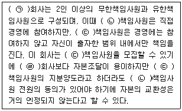
- 합자 - 무한 - 유한 - 합명
- 합자 - 유한 - 무한 - 합명
- 합명 - 무한 - 유한 - 합자
- 합명 - 유한 - 무한 - 합자
(정답률: 58%)
27. 다음 중 주식회사의 특성을 설명한 것으로 가장 거리가 먼 것은?
- 주식회사에서는 출자자와 경영자가 분리되어 있다.
- 주식회사에서는 주식을 소유하고 경영능력이 뛰어난 사람에게 기업경영을 의뢰할 수 있는데, 이들을 일반적으로 전문경영인이라고 부른다.
- 주식회사는 기업경영에 직접 참가할 수 없는 일반자본가로 부터 자금을 대규모로 동원할 수 있어 사업을 확장하는 데 적합하다.
- 주식회사의 출자자는 자신의 출자범위 이내에서만 책임을 진다.
(정답률: 52%)
28. 다음 중 조직문화의 설명으로 가장 거리가 먼 것은?
- 조직의 구성원들의 행동을 만들고 인도하기 위해 이들이 공유하는 신념, 이념, 가치관, 관습, 의식, 규범 등을 의미한다.
- 사회화란 재직기간이 오래된 직원에게 조직의 가치, 규범, 문화를 배우게 하는 과정을 의미한다.
- 조직문화는 구성원들이 부딪히는 문제를 정의하고 분석하고 문제해결방법을 제시하기도 하고 행동을 제한하기도 한다.
- 조직 내부환경의 기초로서 그 구성원들의 경영행위에 대한 방향과 지침이 된다.
(정답률: 66%)
29. 다음 중 경영자의 대인관계 역할에 관한 설명으로 가장 거리가 먼 것은?
- 경영자는 회사를 대표하는 여러 행사를 수행하고 조직의 대표자로서의 역할을 수행한다.
- 경영자는 조직의 리더로서 경영목표를 달성하기 위해 종업원에게 동기부여하고 격려하는 역할을 한다.
- 경영자는 필요한 정보를 탐색하고 수집된 정보를 선별하여 내부 조직구성원에게 제공해야 한다.
- 경영자는 상사와 부하, 기업과 고객, 사업부와 사업부 등의 관계에서 연결고리역할을 한다.
(정답률: 55%)
30. 다음 중 매트릭스 조직에 대한 설명으로 가장 적합하지 않은 것은?
- 조직의 내부자원을 효율적으로 사용할 수 있으며 외부환경의 변화에 신속히 대응할 수 있다.
- 기능부문 담당자와 프로젝트 책임자에게 각각 보고하는 이중적인 명령체계를 갖고 있다.
- 특정 과업의 목표를 달성하기 위해 구성된 임시적 조직으로 과업이 완료된 후에는 해산되는 조직구조이다.
- 관리층의 증가로 인한 간접비가 증가되어 일반적 조직형태 보다 비용이 많이 든다.
(정답률: 56%)
31. 피들러의 상황모형에 따라 아래와 같은 상황에서 김부장이 조직을 이끌 때 효과적인 리더 유형으로 가장 적합한 것은?
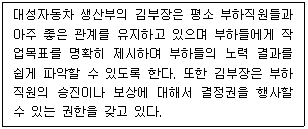
- 과업지향형 리더
- 관계지향형 리더
- 위임형 리더
- 참가형 리더
(정답률: 47%)
32. 다음은 다양한 동기부여이론에 대한 설명이다. 이 중 옳은 것은?
- 욕구단계이론은 '생리적-안전-존경-사회적-자아실현욕구'의 순서로 다섯 가지 욕구단계가 존재한다고 가정한다.
- XY이론에서 X이론은 사람들은 보통 책임을 수용하고 고차원적 욕구가 개인을 지배한다고 가정하는 것이다.
- 동기-위생이론에서 임금, 회사방침, 물리적 작업조건 등은 동기요인으로 간주된다.
- 성취동기이론은 성취동기가 높은 성취자들은 성공할 확률이 50:50의 가능성이 있다고 판단될 때 일을 가장 잘 수행한다고 가정한다.
(정답률: 47%)
33. 최근 기업에서는 인적자원관리의 패러다임이 많이 변화되었다. 이러한 최근의 패러다임 변화 양상에 대한 설명으로 옳지 않은 것은?
- 교육·훈련에 투자하여 질적으로 우수한 인적자원관리를 목표로 한다.
- 개별화되고 다양하며 변화를 주도하는 인재를 채용하는 방향으로 변하고 있다.
- 인사팀에서만 인적자원을 관리하는 것이 아니라 각 해당 부서 담당자들 모두가 인사기능을 담당하고 책임지는 방향으로 가고 있다.
- 근속연수, 온정주의, 연고주의에 따라 승진과 보상을 결정하는 방향으로 변하고 있다.
(정답률: 73%)
34. 장년 근로자의 고용연장 및 기업의 임금 부담 완화를 위해 최근 여러 기업에서는 노사합의에 의하여 일정 연령을 기준으로 생산성과 임금을 연계시켜 임금을 줄여나가는 제도를 실시하고 있다. 이러한 제도를 나타내는 용어로 다음 중 가장 적절한 것은?
- 차별성과급제
- 임금피크제
- 타임오프제
- 집단성과급제
(정답률: 76%)
35. 마케팅 전략 중 표적시장에 공급할 자사제품의 특징을 구체화하고 경쟁적위치를 정립하는 단계로, 자사의 브랜드를 경쟁브랜드에 비해 독특하게 받아들일 수 있도록 고객들의 마음속에 위치시키는 노력을 무엇이라고 하는가?
- 제품차별화
- 시장세분화
- 표적시장결정
- 제품포지셔닝
(정답률: 53%)
36. 다음 중 전사적 자원관리시스템(ERP)의 장점을 설명하는 내용으로 가장 거리가 먼 것은?
- 업무처리의 능률을 향상시키며 이에 따른 생산성 향상
- 모듈 적용 시 데이터의 일관성 및 통합성으로 업무의 표준화
- 특정문제영역에 관한 전문지식을 지식 데이터베이스에 저장하여 문제해결
- 실시간 처리로 정보의 신속성 제공
(정답률: 54%)
37. 다음 중 기업의 재무상태표에 대한 설명으로 가장 옳지 않은 것은?
- 자산은 자본과 부채의 합과 같다(자산 = 자본 + 부채).
- 매출채권, 유가증권, 건물은 자산에 해당되므로 오른쪽에 기록한다.
- 일정한 시점에서 기업이 보유하고 있는 자산, 부채, 자본에 관한 정보를 제공하는 표이다.
- 재무상태표에서 왼쪽을 차변, 오른쪽을 대변이라 부른다.
(정답률: 70%)
38. 금융기관간의 영업활동 과정에서 남거나 모자라는 자금을 30일 이내의 초단기로 빌려주고 받는 것을 이것으로 부르며, 이때 은행 · 보험 · 증권업자 간에 이루어지는 초단기 대차에 적용되는 금리를 일컫는 용어는?
- 제로금리
- 콜금리
- 기준금리
- 단기금리
(정답률: 56%)
39. 4차 산업혁명의 특징 중 하나인 첨단기술은 경제, 사회전반에서 융합이 이루어지고 있다는 점이다. 다음 중 4차 산업혁명을 이끄는 대표적인 주요기술 중 가장 거리가 먼 것은?
- 인공지능(AI)
- 사물인터넷(IoT)
- 빅데이터(Big Data)
- 고객관리시스템(CRM)
(정답률: 75%)
40. 가격 대비 마음의 만족이 큰 제품을 택하는 '가심비(價心費)'를 따지는 소비를 무엇이라 하는가?
- 착한소비
- 기호소비
- 플라시보 소비
- 소비대차
(정답률: 60%)
3과목: 사무영어
41. 아래 전화메모의 내용에 해당되지 않는 것은?
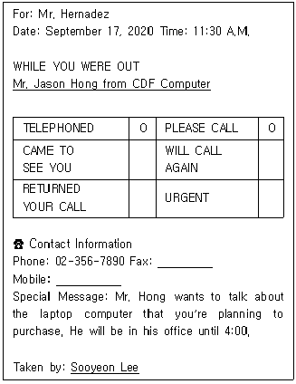
- Mr. Hernadez은 Sooyeon Lee에게 전화를 걸었다.
- 이 전화메모는 Sooyeon Lee가 작성하였다.
- Mr. Jason Hong은 그의 사무실에 4시까지 있을 예정이다.
- Mr. Jason Hong은 Mr. Hernadez가 구입할 계획인 노트북 컴퓨터에 대해 논의하고자 한다.
(정답률: 55%)
42. Read the following Mr. Kim's itinerary and choose one which is NOT true.
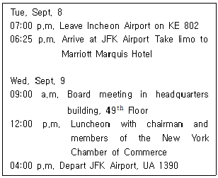
- Mr. Kim will stay at Marriott Marquis Hotel for one night.
- The board meeting will be held on the 49th floor of headquarters building.
- Mr. Kim will have lunch with chairman and shareholders on the second day.
- Mr. Kim will be leaving JFK Airport on United Airlines 1390 at 4 o'clock in the afternoon.
(정답률: 54%)
43. 다음 email에 대한 설명으로 가장 바르지 않은 것은?
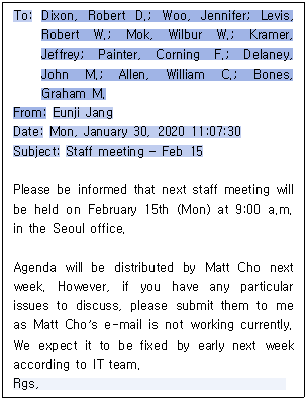
- 이 이메일의 수신인은 총 9명이다.
- 회의 안건은 Matt Cho가 배부할 예정이다.
- 메일 수신인 중에 논의하고자 하는 특별한 안건이 있을 경우 Matt Cho에게 보내면 된다.
- 직원 회의는 서울 사무실에서 2월 15일 월요일 오전 9시에 개최된다.
(정답률: 53%)
44. Read the following dialogue and choose one set which is arranged in CORRECT order.
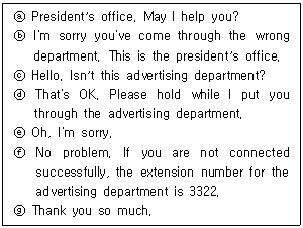
- ⓐ-ⓒ-ⓑ-ⓔ-ⓓ-ⓖ-ⓕ
- ⓐ-ⓒ-ⓑ-ⓔ-ⓓ-ⓕ-ⓖ
- ⓐ-ⓒ-ⓑ-ⓕ-ⓔ-ⓓ-ⓖ
- ⓐ-ⓒ-ⓑ-ⓕ-ⓔ-ⓖ-ⓓ
(정답률: 38%)
45. 다음은 김수미 지원자의 이력서 중 일부 내용이다. 이에 대한 설명으로 가장 바른 것은?
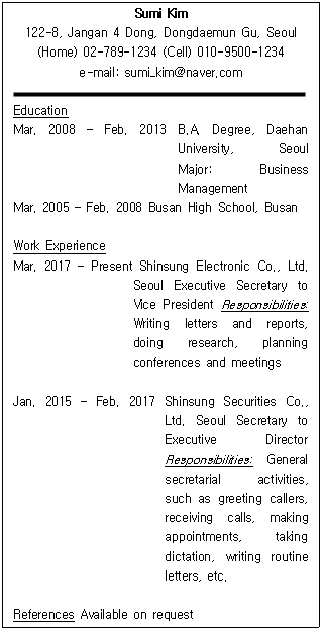
- 대학에서 비서학을 전공하였다.
- 신성증권에서는 일반적인 비서업무인 전화 응대, 내방객 응대, 일정관리와 회의 기획 업무를 수행하였다.
- 신성전자에서는 대표이사의 수석비서로서 서신 및 보고서 작성, 리서치 업무 등을 수행하였다.
- 신원보증인은 특별히 명기하지 않았다.
(정답률: 37%)
46. Choose the one which is NOT true about the given conversation.
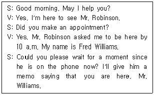
- The secretary will tell his/her boss over the phone that Mr. Williams is here.
- Mr. Williams was asked to wait for a while.
- Mr. Robinson was on the line when Mr. Williams visited.
- Mr. Robinson and Mr. Williams made an appointment to meet at 10 a.m.
(정답률: 35%)
47. Which of the followings is the MOST appropriate expression for the blank?
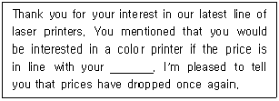
- money
- account
- budget
- budgetary
(정답률: 49%)
48. Fill in the blanks with the BEST ones.
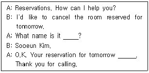
- below - was cancelled
- over - has cancelled
- under - has been cancelled
- off - cancelled
(정답률: 41%)
49. What is the MOST appropriate answer in the following conversation?
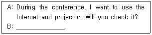
- Yes, I'll have it ready.
- I'm afraid that the projector is available.
- No problem. There is no Internet connected here.
- You can use it. Internet is not allowed.
(정답률: 46%)
50. Which of the followings is the LEAST proper part of checklist when closing a meeting?
- Check no-one has anything more to say.
- Ask if all understand and agree with the results.
- Confirm responsibilities of each participant from the meeting.
- Introduce a new agenda of a meeting to all participants.
(정답률: 37%)
51. Followings are mail addresses of envelopes. Which has the CORRECT order?
- Mr. John Kim
Vice President
ABC Corporation
43 Stevenson Road
San Francisco, CA 83796 - Vice President
ABC Corporation
Mr. John Kim
43 Stevenson Road
San Francisco, CA 83796 - Vice President
ABC Corporation
San Francisco, CA 83796
43 Stevenson Road
Mr. John Kim - ABC Corporation
Vice President
43 Stevenson Road
Mr. John Kim
San Francisco, CA 83796
(정답률: 53%)
52. Which pair is NOT proper?
- 가위 - scissors
- 서류함 - filing cabinet
- 서랍 - bookcase
- 종이 재단기 - paper cutter
(정답률: 52%)
53. Choose one pair of dialogue which does NOT match correctly each other.
- A: How would you like your coffee?
B: I like mild one. - A: Could you tell me the nature of your business?
B: I'll see if he is available now. - A: He will be with you in 10 minutes.
B: No problem. I'll be back in a little while. - A: When does John leave for his meeting?
B: About ten past three, I think.
(정답률: 43%)
54. Which is the LEAST proper consideration as a secretary when planning his/her boss's overseas business trip schedule?
- Purpose of business trip
- Domestic economic situation
- Company's expense regulations
- Boss's preference
(정답률: 46%)
55. According to the following formal business letter, choose one that is the MOST appropriate order?
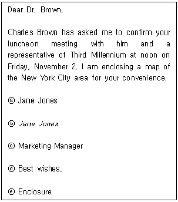
- ⓑ-ⓐ-ⓒ-ⓓ-ⓔ
- ⓐ-ⓒ-ⓑ-ⓓ-ⓔ
- ⓓ-ⓑ-ⓐ-ⓒ-ⓔ
- ⓒ-ⓐ-ⓓ-ⓔ-ⓑ
(정답률: 41%)
56. Choose the MOST proper English sentence.
- 당신은 당신의 컴퓨터 스킬을 향상시키기 위해 열심히 노력해야 한다.
→ You should hardly try to improve your computer skills. - 스미스씨는 런던으로 2일간 출장을 갈 것이다.
→ Ms. Smith will leave London for two day's business trip. - 메시지를 남기시겠습니까?
→ Could you take a message? - 그 이벤트는 9월 20일에 열릴 것이다.
→ The event will take place on the 20th of September.
(정답률: 34%)
57. Choose one which does NOT match correctly each other.
- Please look over the first draft of the report.
→ 보고서 초안을 넘겨주세요. - It seems that we have almost finished the work.
→ 우리가 일을 거의 끝낸 것 같습니다. - His schedule is fully booked all day.
→ 그의 일정이 종일 꽉 차 있습니다. - Could you arrange the foreign currency for me?
→ 외환을 준비해 주시겠어요?
(정답률: 33%)
58. Which English-Korean pair is LEAST proper?
- stationary: 문구류
- means: 수단
- employment: 고용
- customs: 세관
(정답률: 42%)
59. Which is the LEAST correct about the following?
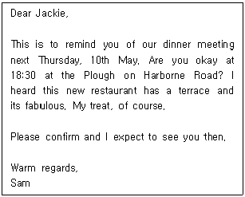
- The subject of the email is dinner appointment.
- Sam recommends the Plough on Harborne Road.
- Jackie is going to buy a dinner.
- The place of the meal will be confirmed soon.
(정답률: 49%)
60. If a call is transferred to Bill Edwards, what should he say as soon as he picks up the phone?
- Who is this?
- What's your name?
- This is Bill Edwards.
- What do you want?
(정답률: 55%)
4과목: 사무정보관리
61. 다음 그래프는 30대 남녀 정규직, 비정규직 추이를 나타낸 그래프이다. 이 그래프에 대해 가장 적절하지 않은 분석은?
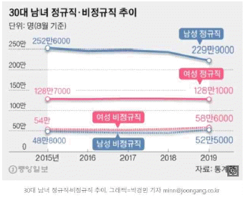
- 2015년부터 2019년도까지 시간의 흐름에 따른 데이터의 크기를 비교하기 적합한 그래프 종류를 사용했다.
- 2019년 8월 기준으로 2015년에 비해 여성 정규직이 감소된 비율이 남성 정규직이 감소된 비율보다 높다.
- 2015년도에 비해 2019년도에는 성별에 관계없이 비정규직 수가 증가하였다.
- 30대의 경우 여성 정규직보다 남성 정규직의 수가 많다.
(정답률: 62%)
62. 다음은 상공그룹 비서가 작성한 사내 정보보안 자가 체크리스트이다. 체크리스트 내용 중 정보보안 관리 방법이 적절하지 않은 내용으로 묶인 것은 무엇인가?
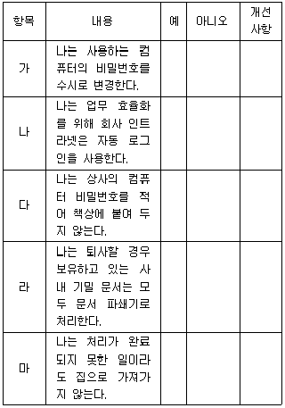
- 가, 나
- 나, 다
- 다, 마
- 나, 라
(정답률: 57%)
63. 아래 비서들의 대화를 보고 문제를 해결하기 위해서 가장 적절한 어플을 고르시오.
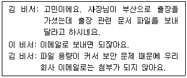
- 캠카드
- TLX
- 드롭박스
- 파파고
(정답률: 64%)
64. 사무정보기기 및 사무용 SW를 다음과 같이 사용하고 있다. 이중 가장 부적절한 것은?
- 김비서는 좀 더 빠른 정보처리를 위해 USB 3.0 포트를 2.0포트로 변경했다.
- 백비서는 상사와 일정을 공유하기 위해 네이버 캘린더에서 공유 캘린더를 사용하였다.
- 이비서는 데이터베이스 관리를 위해 Excel과 Access 프로그램을 사용하고 있다.
- 최비서는 상사의 명함 관리를 위해서 리멤버 앱과 캠카드 앱을 비교해보았다.
(정답률: 69%)
65. 상사와 기업에 관련된 정보를 수집, 관리하기 위한 비서의 소셜미디어(SNS) 활용 및 관리 방법에 대해 가장 적절하지 않은 것은?
- 본인 회사의 다양한 SNS에 관심을 갖고 모니터링한다.
- 본인의 회사와 경쟁 구도를 갖고 있는 회사의 SNS도 모니터링한다.
- SNS 모니터링 결과 보고서는 수치화된 데이터를 활용하여 명확하게 작성한다.
- 상사의 개인 SNS는 상사의 개인정보이므로 비서는 관여하지 않는다.
(정답률: 61%)
66. 다음 신문기사의 내용과 가장 관련이 없는 것은?
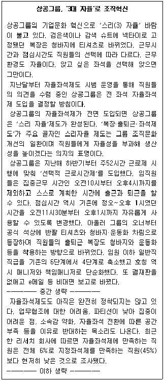
- 상공 그룹의 스리 자율 제도는 복장, 출퇴근, 좌석제도의 자율을 포함한다.
- 스리 자율 제도에 의해 상공 그룹의 직원들은 오전10시부터 오후4시 사이에 스스로 계획한 시간에 출근과 퇴근을 할 수 있다.
- 현재 상공 그룹에 전 좌석 자율좌석제 전면도입은 결정되지 않았다.
- 결재판을 없애고, e메일을 통한 비대면 보고를 도입했다.
(정답률: 60%)
67. 다음 중 한글맞춤법에서 허용한 문장부호 활용으로 적합하지 않은 것은?
- 첨부: 1. 회의일정표
- 3.1 운동
- 8ㆍ15 광복
- 2019. 8. 20(금)
(정답률: 46%)
68. 다음은 김비서가 상사에게 정리를 지시받은 명함에 적힌 영문이름이다. 올바른 명함 정리 순서는?
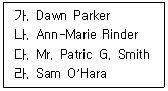
- 라-가-나-다
- 나-가-다-라
- 다-라-가-나
- 가-나-다-라
(정답률: 40%)
69. 다음 중 문서작성 시 발의자와 보고자에 대한 설명이 가장 적절하지 않은 것은?
- 발의자란 기안하도록 지시하거나 스스로 기안한 사람을 말하며 보고자란 결재권자에게 직접 보고하는 자를 말한다.
- 발의자는 '◉'로, 보고자는 '★'로 표시하고, 발의자와 보고자가 동일인인 경우에는 '◉', '★'를 함께 표시한다.
- 업무관리시스템 또는 전자문서시스템을 이용하여 보고하거나 결재권자에게 직접 보고하지 아니하는 경우에는 보고자 표시를 생략한다.
- 각종 증명 발급, 회의록, 그 밖의 단순 사실을 기록한 문서는 발의자 및 보고자의 표시를 생략한다.
(정답률: 48%)
70. 다음 [보기]에서 문서에 대한 설명이 잘못된 것끼리 나타낸 것은?
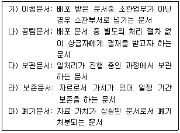
- 가), 나), 다), 라), 마)
- 가), 나), 다)
- 나), 다)
- 다), 라)
(정답률: 48%)
71. 정보처리능력 중 정보의 수집과 분석, 관리에 관한 다음의 설명 중 가장 옳은 것은?
- 정보 분석 절차 중 관련 정보 수집 단계에서 수집의 대상은 기존에 가지고 있던 자료를 제외한 신규자료만 해당된다.
- 가지고 있는 정보를 적시에 효율적으로 활용하기 위해서는 소장하고 있는 정보를 적절하게 분류하여 관리하는 것이 필요하다.
- 좋은 정보를 얻기 위해서는 좋은 자료가 필요하므로 정보의 분석보다 정보의 수집에 더 중점을 두어야 한다.
- 정보는 그 활용 가능성에 따라 사용 목적에 직접 부합하는 1차 자료와 사용 목적에 직접 부합하지 않는 2차 자료로 구분할 수 있다.
(정답률: 55%)
72. 전자문서의 보존 및 폐기에 대한 설명으로 가장 부적절한 것은?
- 전자 문서의 보존 기한은 일반적으로 종이 문서의 보존기한과 동일하게 적용된다.
- 전자 문서의 보존은 비서실과 같은 업무 처리 소관 부서에서 담당한다.
- 보존 기한이 경과한 전자 문서는 보존 가치에 대한 평가를 하여 보존 기간을 재책정할 수 있다.
- 삭제 및 폐기가 확정된 전자문서는 복원이 불가능하도록 완전 삭제하여야 한다.
(정답률: 47%)
73. 외부기관에서 우리기관으로 수신된 문서를 처리 및 관리하고 있다. 다음의 문서관리 흐름의 순서가 바르게 된 것은?
- 배부-접수-기안-선람-시행-결재-분류-보관-보존-폐기
- 접수-배부-선람-기안-결재-시행-분류-보관-보존-폐기
- 접수-배부-선람-기안-시행-결재-보관-분류-보존-폐기
- 배부-접수-분류-선람-기안-시행-결재-보존-보관-폐기
(정답률: 59%)
74. 다음 중 국내 우편의 종류와 내용이 잘못 연결된 것은?
- 일반 보통 우편: 배송 확인 불가능
- 특급 우편 익일 배달: 발송 다음날 도착, 배달확인 가능
- 요금 후납 발송: 연 단위 후납 방식
- 유가 증권 등기: 취급 한도액 2,000만 원
(정답률: 58%)
75. 감사장 작성 요령에 대한 설명으로 가장 옳지 않은 것은?
- 대부분 기업에 보내는 것보다는 개인에게 직접 감사하는 형식이므로 너무 형식에 치우지지 않도록 한다.
- 회의에 연사를 초빙했을 때에 연사에게도 감사장을 보내도록 한다.
- 회의 참석자들에게는 회의 종료 후 일주일 이내에 감사장을 보낸다.
- 상사 지시에 따라 상사를 대신하여 발송한다는 내용을 기재하여 비서 이름으로 발송한다.
(정답률: 59%)
76. 다음에 제시된 문서 작성 계획시 고려사항 중 문서작성 목적과 가장 관련이 없는 내용은?
- 문서의 전달방법은 무엇인가?
- 상사에게 보고하기 위한 문서인가?
- 상사를 대신해서 작성하는 문서인가?
- 이 문서를 읽는 사람들이 무엇을 하기를 원하는가?
(정답률: 43%)
77. 비서가 상사의 발표를 위해 자료를 준비하고 있다. 이때 효과적인 발표자료 작성을 위해서 가장 적절하지 않은 업무처리는?
- 김비서는 발표 주제를 대변할 수 있는 템플릿을 이용하여 슬라이드마다 형식을 통일하였다.
- 유비서는 슬라이드를 제작하는 컴퓨터와 프레젠테이션을 진행할 컴퓨터가 다르기에 윈도우 기본 폰트를 활용해 슬라이드를 제작했다.
- 장비서는 가독성을 위해 수치를 나타낼 때 도표보다는 그래프로 표현하였다.
- 강비서는 one page two message원칙에 의거하여 전달할 메시지는 슬라이드 상단과 하단에 두개를 제시하였다.
(정답률: 58%)
78. 김비서는 상사의 업무처리를 위해서 자체적으로 전자문서 파일을 사용하고 관리하고 있다. 업무용 컴퓨터에 저장된 파일 및 폴더관리와 관련하여 가장 적절하지 않은 업무처리는?
- 작성중인 파일명과 작성완료된 파일명은 동일하게 설정한다.
- 폴더명을 부서명이나 주제별, 프로젝트별 등으로 결정하여 폴더를 만들어 저장한다.
- 정기적으로 외장 하드에 백업을 받아서 자료의 손실에 대비한다.
- 전자문서인 경우는 cross-reference를 고려하지 않아도 무방하다.
(정답률: 49%)
79. 다음 중 이메일 수신시의 정보 보안을 위한 유의사항으로 가장 적절하지 않은 것은?
- 바이러스의 종류에 따라 첨부파일을 실행하지 않고 본문 내용을 보기만 해도 감염될 수 있으므로 의심스러운 이메일은 열어보지 않는다.
- 비밀번호를 수시로 변경하거나 이중 로그인을 통해 보안을 강화한다.
- 업무 메일의 첨부파일은 신속한 처리를 위해 바로 열람하여 처리한다.
- 이메일에 링크된 홈페이지에 개인정보나 비밀번호를 입력하지 않는다.
(정답률: 56%)
80. 프레젠테이션 전개 단계가 나머지와 다른 하나를 고르시오.
- 주의유도, 분위기 조성, 동기부여
- 중요 내용 요약 및 강조
- 핵심 내용 소개
- 발표 과정 소개
(정답률: 44%)